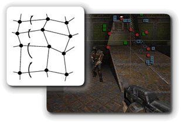

Up to now we've written counter-controlled, sentinel-controlled and flag-controlled loops. There are two last categories of loops you'll need to know how to implement: the data-bound loop and the limit-bound loop.
 With a data-bound loop, instead of looking for a specific
value, like we do with a sentinel, or a computed value,
like we do with limit loops, we just keep going until
there is no more data left.
With a data-bound loop, instead of looking for a specific
value, like we do with a sentinel, or a computed value,
like we do with limit loops, we just keep going until
there is no more data left.
Well, how do we tell if there is any more data left? For that, we rely on the operating system to send us a specific signal, traditionally called EOF. EOF stands for "end of file"; an EOF-controlled loop is just another name for a data-bound loop.
Introducing Iterators

To implement a data-bound loop, you'll usually use an iterator of some sort. An iterator is an object that allows you to apply some operation to all of the members of a group of related variables or objects, using a loop.Iterators can be used to skip from cell to cell in a biological simulation, or to display an "overhead radar" of all of the objects in a game of Doom (as the illustration on the right shows.) As one textbook put it: "iterators provide a consistent and simple mechanism for systematically processing a group of items", no matter what kind of things those items might be, or how those items are stored.
Such groups of related items or variables are known as
collections, and Java has several different
types. The String class is a collection of
characters. But, in another sense, we can treat a
String as a collection of tokens. Tokens
are just meaningful sequences of characters.
In the next chapter, we'll take a look at Java's array collection type, and, then later, we'll look at the ArrayList class. If you go on in Computer Science and take a Data Structures course, you'll learn about dozens of different kinds of collections and their associated iterators.
To get started for right now, though, let's take another look
at an iterator object you've already met: the
java.util.Scanner class.
The Scanner Class
You first met the Scanner class back in
Section 3.1—Interactive Programs,
where you saw how it could be used to read input in
a "traditional" Java console program.
The Scanner class is actually much more versatile
than I've let on. Using a Scanner as an
iterator allows us to:
- process each individual word in a line of text
- read and process each line of text in a file
- read and process tokens from a network stream, such as a Web page or FTP connection
In a previous chapter, (Section 6.5—Logical Operators), you
saw how you could use the logical AND and NOT
operators to count the number of words in a String.
In that section, you had to carefully monitor each character
to see if you were entering or leaving a word, and then act
accordingly.
The iterators provided by the Scanner class
will do all of that for you automatically.
Reading Tokens
To read a token using the Scanner class,
you have to do three things:
- Construct a
Scannerobject and "hook it up" with the source of the data. - Write a
whileloop that continues until you are out of data. You do that by calling theScanner hasNext()method. If you are at end-of-input (or EOF), then the method will returnfalse; otherwise it returnstrue. - Read the next word or token from the
input. You do that by calling the method
next()which returns a token, not a line of text.
The next() method returns its token as a
String with all of the delimiters
(or token-separators) removed. The "stock" version
of the Scanner uses whitespace as the delimiter,
so the token you get back will have both leading and
trailing whitespace removed.
Creating Scanner Objects
Here are a few snippets that show you how to connect a
Scanner object with different kinds of
data sources. You already saw how to connect to the
standard Java system console (System.in) like this:
Scanner cin = new Scanner(System.in);
To "read" from a String token-by-token,
either of these will work:
Scanner sin1 = new Scanner("A string literal.");
Scanner sin2 = new Scanner(str); // a String variable
To read from a file on disk, you first need to open the file. Java has a wealth of classes that allow you to do this, but, unfortunately, all of them require you to explicitly handle various error conditions, such a missing file.
You'll learn how to use Java's standard file-processing classes later in the course. For right now, though, we'll just add:
- another
importstatement to the top of our program:import java.io.File;, and then... - a bit of "magic" to our program's
main()method, adding this line to heading you've already memorized:public static void main(String[] args) throws Exception
Once you've added the import java.io.File; and
the throws Exception to the end of
the main() method header, then here's how you'd open the
text file "moby.txt" containing the text of Moby Dick:
Scanner fin = new Scanner(new File("moby.txt"));
I named this Scanner variable fin to
remind me that it's a file input, not a console
input.
Scanners in ACM Programs
Although we haven't used the Scanner class in our
ACM console programs, the ACM libraries have several methods that
allow you to hook up a Scanner to a network URL or
to a data file, as well as reading from the console window itself.
To create a Scanner that reads from the ACM
ConsoleProgram window, (instead of from the
standard input stream), you can add this line to your program:
Scanner cin = new Scanner(getReader());
To create a Scanner that reads from a data file,
you can import the acm.util package and then
use the MediaTools.openDataFile() method, like
this:
Scanner fin = new Scanner(MediaTools.openDataFile("moby.txt"));
The advantage of the using the MediaTools method,
instead of the File constructor, is that you don't
need to add throws Exception to your run()
method. (In fact, you can't; your code won't compile if you
do.
Another advantage is that if the String passed to
openDataFile() starts with http://, then
the method will try to open that Web page instead of looking
for a file of that name.
Processing the Data
Once you have the Scanner open, you use a
while loop to process its data. This requires two
things:
- You need to use the method
hasNext()as your while loop condition. As long as theScannerhas more data to give you, the method will returntrue. - Inside the body of your loop, you need to use the
Scannerto remove some data from input. You can do that by calling any of theScannerinput methods, likenext()ornextLine().
Here's a section of code that reads all of the lines from the
Scanner object named fin:
while (fin.hasNext()) // check if there is more data
{
String line = fin.nextLine(); // remove a line from the file.
}
Closing the File
In this program, we open a disk file and never close it.
That's a really bad habit to get into. We can close the
file by closing the Scanner object we used
to read the file in the first place.
Add this line to the end of your main() method
and all will be well:
fin.close();
Note that you don't need to close the Scanners
used to read from System.in or from the individual
lines of text.
For some hands-on practice using the Scanner class as
an iterator, go ahead and complete H26—The File Stats Program.
More on Tokens
Once each line has been extracted, the FileStats program uses a
second Scanner designed to break each line into its
individual parts, (called tokens). A token is just a "meaningful
chunk of text". Words are tokens, as are the operators, operands, and keywords
in a programming language like Java.
To define a token, you specify the characters that separate one token from
another. These are called delimiters. As I mentioned, the
default delimiters are the whitespace characters. If you want to
read your text based on a different set of tokens, though, you
can use the Scanner useDelimiter() method to change
the separator to something else.
Different Tokens
The String you supply to the useDelimiter()
method is actually a regular expression. That means you can
use some very sophisticated pattern matching when processing an
input file. One useful delimiter is the "end-of-file" regular expression.
Here is how you set this delimiter:
fin.useDelimiter("\\Z");
Now, when you call the next() method, your Scanner
will read the entire file into a single String. (Don't forget
to close() the Scanner() after doing this.)

Iterators and Loops Summary
- An iterator is an object that knows how to loop over a collection of values in a consistent way, regardless of the type of values or the way that they are stored.
- A data bound loop keeps processing data until there is no more data to be read. This is traditionally known as the EOF or end-of-file condition (even when the data doesn't come from a traditional file).
- When using the
Scannerclass as an iterator, first connect it to a data source, then use a loop to read individual tokens until you have read all the data. - To connect to a data file, use the
Fileconstructor, passing the name of your file. Add the phrasethrows Exceptionto themain()method heading in the event the file does not exist. - To connect to a
String, pass theStringas a parameter to theScannerconstructor. - In ACM programs, you can read from the console window (passing
getReader()) or a Web page or local data file by using theacm.util.MediaTools.openDataFile()method. - To control your loop, call the
Scanner'shasNext()method to see if the input source has been completely read. - You may use any of the
Scannermethods you met earlier to read specific kinds of tokens from the iterator. If aStringcontains digits, for instance, you can usenextInt(). - If your iterator opens an external resource, like a data file or a Web page, then make sure you close the iterator before your program ends.
- You can change the way that the
next()method works by changing the delimiters used around tokens with thesetDelimiter()method.